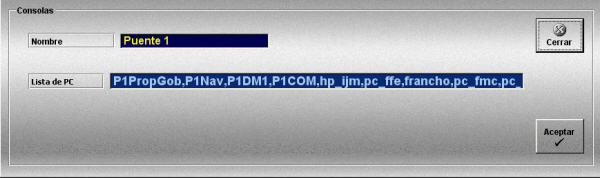

Consolas
La creación y edición de consolas se realiza mediante la siguiente ventana.

Esta ventana permite crear las consolas que pueden participar en los distintos Ejercicios. Para que una consola pueda participar en un Ejercicio, deberá ser añadida al mismo. Una vez añadida al Ejercicio se le podrá asignar una o varias de las unidades participantes en el mismo.
Las consolas en realidad pueden estar constituidas por un grupo de PCs, por ejemplo, por todos los PC que componen un puente de gobierno de un buque. De este modo se pueden agrupar para la asignación de unidades, aunque durante la ejecución cada PC se encargará de una funcionalidad concreta (consola de propulsión o gobierno, consola de navegación, etc.) según se haya configurado en la instalación del simulador.
Por tanto, una consola queda definida por los siguientes datos:
Nombre: Nombre de la consola.
Formato: caracteres alfanuméricos.
Lista de PC: Lista de PCs (uno o varios) que componen la consola, separados por coma.
Formato: cadenas alfanuméricas separadas por comas.